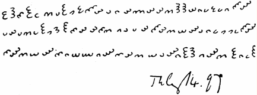
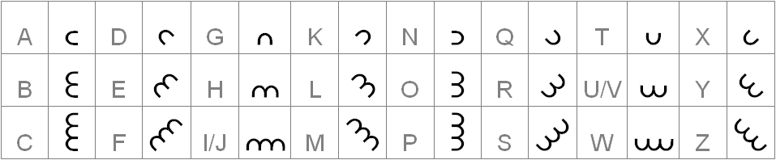

The note
87 glyphs sent by Edward Elgar to Dora Penny on 14 July 1897 — and what is actually known about them.
The document

Everything below is sourced, and tagged for how solid it is: fact is documented and uncontested, claim is someone's proposal that has not been independently confirmed, tested marks something checked computationally that failed. The distinction matters more than usual here — this cipher attracts confident announcements, and almost none of them survive contact with a baseline.
| item | what is known |
|---|---|
| Date | 14 July 1897 |
| From | Edward Elgar, then 40, a provincial music teacher not yet famous — the Enigma Variations were still two years away |
| To | Dora Penny, born 1874, so 23 at the time. Several popular accounts give her age as 17; that is arithmetically impossible against her birth year and should be disregarded |
| Occasion | Written after the Elgars returned to Great Malvern from a stay at Wolverhampton Rectory, home of Dora's father, the Rev. Alfred Penny. Dora's stepmother was a friend of Elgar's wife Alice |
| Enclosure | The cipher accompanied a plain thank-you letter written by Alice Elgar. Edward added the enciphered sheet separately, with “Miss Penny” pencilled on the reverse |
| Provenance | Dora never solved it. The sheet sat in a drawer some forty years, was reproduced in her 1937 memoir, and the original was subsequently lost — every modern transcription descends from that printed facsimile |
That last point deserves weight. Nobody working on Dorabella today is reading Elgar's paper. They are reading a 1937 halftone reproduction of it, which is exactly why the orientation of several glyphs is genuinely disputed rather than merely careless — and why my transcription ships three readings rather than one ([05]).
The symbol system
- 87 characters in three lines. fact
- 24 distinct symbols, each one, two or three approximate semicircles, oriented in one of eight directions — 3 × 8. fact
- A small dot follows the fifth character of the third line. Its purpose is unknown. fact
- The orientation of several characters is ambiguous in the surviving reproduction. fact
- The Cipher Foundation describes the alphabet as “3 versions each of 8 rotated E-shapes”, plausibly a pun on Elgar's initials EE. reading
- In Elgar's own 1920s notebook the glyphs are drawn beside clock-face diagrams, and behave as polar coordinates — radius 1–3, angle in π/4 steps. This is the direct evidence that the snowflake layout I use is Elgar's own way of thinking about his alphabet, not a modern convenience. fact → [06]
The alphabet — 24 symbols, three by eight
One, two or three semicircular cups, each facing one of eight directions. That product — 3 × 8
— is the whole alphabet, and it is two short of 26, which is why a letter or two has to go without. My
notation writes a glyph as arcs + direction, where the direction is the side the glyph
opens to: the note's first glyph, an ε opening east, is 2e; a c-shape is
1e; an m-shape opening downwards is 2s.
Drawn the way the glyphs sit on the note, each opening towards the direction in its name (the arcs are drawn nested rather than side by side, but the directions match). benzedrine.ch names them the same way — “two semi-circles with their open sides facing east” for the first glyph. The manuscript itself says nothing about naming, and every naming convention is a global relabelling that changes nothing in the analysis ([05]).
Why “eight rotated E-shapes”
Read as the Cipher Foundation reads them — three versions of eight rotated E-shapes, plausibly a pun on Edward Elgar — the same 24 symbols look like this:
Same alphabet, different pen. A cup with one, two or three strokes and an E with one, two or three prongs encode identical information — which is why the drawing style is a display option in my tools and not a cryptographic choice.
Elgar's key, as it is usually drawn

Dorabella, in the same hand
The 87 glyphs of my resolved transcription, drawn by the same renderer. The boxed glyph is the one followed by the dot.
Dorabella uses 20 of the 24 symbols across 87 characters, leaving 1w 2w 3ne 3sw
entirely unused — statistically ordinary for 87 letters of English (38th percentile of real samples), and one
of several reasons the hoax theory has lost ground.
The awkward fact
We appear to know Elgar's alphabet, because he wrote it down himself. Applying the key to Dorabella — the Cipher Foundation prints the result — gives the reading usually quoted:
which is not English. So either the key is not the one he used here, the plaintext is not ordinary English, or another layer sits on top. That is the entire problem in one line, and it has not moved in a century.
My transcription reproduces this reading at 82 of 87 positions with zero letter collisions — see [05]. Note that sources do not draw the key identically: this reading puts A on the three-arc glyph that opens east and C on the one-arc one, the reverse of the order in the Commons table above. My own snowflake fill is a third letter order again. For the cryptanalysis none of this matters — a substitution solver absorbs any fixed relabelling — but it is worth checking which key a quoted reading used.